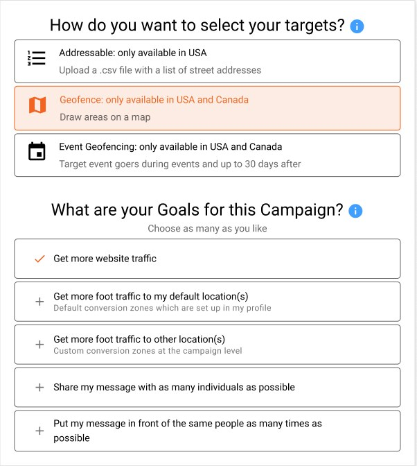
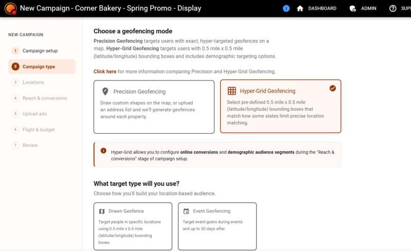
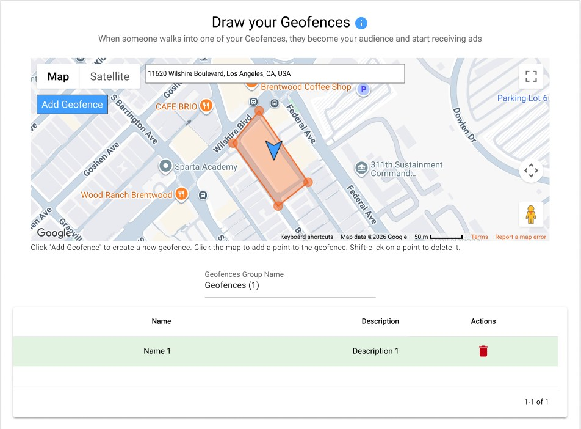
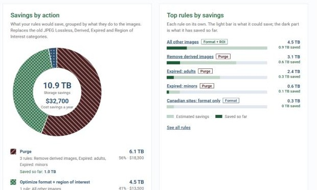
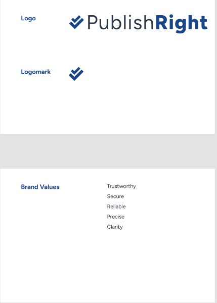
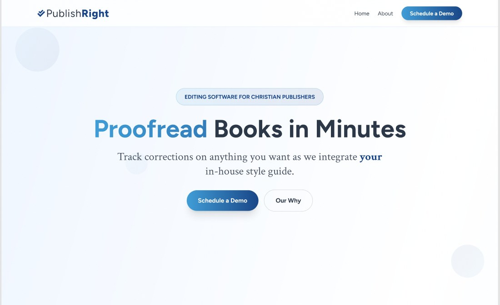
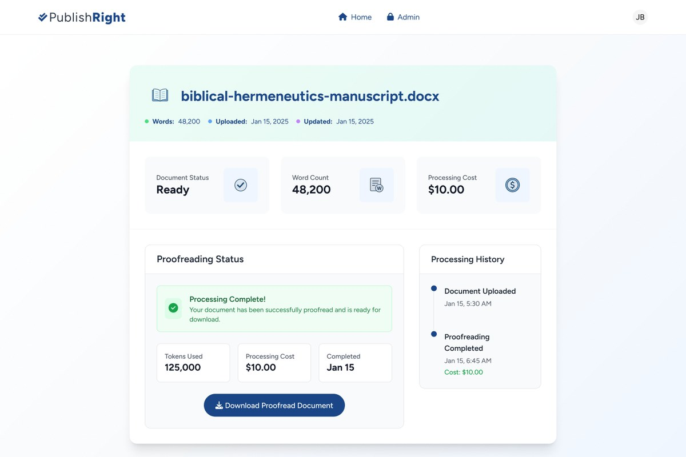

Josh Bauer
Josh BauerJosh Bauer, product designer
Software shouldn't need a training manual.
I'm Josh Bauer, a senior product designer in Pittsburgh. For nearly 20 years I've worked on all kinds of software: self-serve apps, internal tools, admin consoles and, lately, AI products, usually as the first and only designer. This canvas has my work, my opinions, and a few other things if you go looking.
Or just say hi.
Opinions
Things I keep saying
Tell us what needs to happen. Let the design and development team figure out how.
This has come up throughout my career.
Business users describe what they need and naturally explain how they want it to work too. That becomes the requirement. The designer builds it. And then everyone wonders why the product feels off.
They know the process better than anyone. That part's invaluable. But "put the filter at the top and show 8 columns in the table" is a design decision, not a business requirement.
Their feedback matters. Just not as the final answer on how something should work.
From a post on LinkedInA layout isn't a design. Context is.
AI can spit out a design that looks good in a screenshot. It can't tell you why users bail at step 3. It doesn't know your ops team pictures this flow completely differently than your customers do. It has no idea the last two versions of this exact screen already failed, or why.
It's not in the room. It doesn't know your product, your users, or how you got here.
From a post on LinkedInThe question isn't whether AI can make something that looks good. It's whether it's making the right thing.
I use AI in our design work. It's useful for moving fast, generating options, exploring directions, and cutting out repetitive work. But it's not a silver bullet.
What it can't do is replace the judgment of someone who knows your users, your product, and why things are the way they are.
From a post on LinkedInI don't think work software should need a training manual. If a screen needs a walkthrough, the screen is the problem.
That's an unpopular position with people who sell training. It's a popular one with the people who have to use the software at 7am on a Monday.
It trickles down. The way a company treats its internal tools is the way its customers end up getting treated.
Get the experience right for your own staff first. Time is money, people stay longer, and there are fewer workarounds living in spreadsheets nobody admits to.
Getting the requirements right the first time isn't a design problem. It's a business problem.
The product gets built. Users get hands on it. And suddenly it doesn't work the way they actually work, because the requirements were written around how someone imagined it, not how it gets used.
Rework is expensive. Not just in time and money, but in the confidence your team has in the process.
From a post on LinkedInThe process
How I work
- Start with the people doing the work. and what actually needs to happen. Not how someone imagines it should work.
- Design in Figma and Claude Design. and build the design system as I go so the next screen is faster than the last.
- Build with AI. Claude Code writes most of the code now. I review it and test it before it ships, and years of writing React, Angular and TypeScript myself help me spot what's off.
- Measure with PostHog and real usage data. Did it change anything? If not, it's not done.
FAQ
Questions people ask
- Where are you?
- Pittsburgh. I'm happy working remotely and I've done it for years.
- Do you write code?
- I used to write a lot of it: React, Angular and TypeScript. These days, like most people, I spend my time researching, designing and planning, then have AI write the code while I review and test it. Having written it myself makes me better at catching what's wrong.
- What kind of company suits you?
- Smaller ones. They tend to have fewer layers and less red tape, so a team can move fast, make decisions and own the work. That's where I've done my best work and had the most fun.
- What do you like working on most?
- Problems. New features, new integrations, new ideas, and anything complicated that needs to feel simple to the person using it. The challenge matters more to me than the category.
Simple By Design
A newsletter where I take a screen I came across, say what's bugging me about it, and redesign it. Quick explorations from instinct and patterns I've seen over the years. Not deep research.
Read it on LinkedInThe path
How I got here
2024 to now
Rev3 Labs
Partner and product design lead. The four products on this canvas, usually as the only designer.
2021 to 2024
Relode
Senior UI/UX designer. The Figma component library and Zeroheight docs design and engineering shared across several apps, plus accessibility reviews before merge.
2015 to 2021
Clean Earth
Designer and developer, then application architect. Built the design system and style guide for the platform its facilities run on, ran releases and managed the developers. It's still in use.
2011 to 2015
Truelearn and AES
Web and mobile UI.
2007 to 2011
Siemens
Systems engineer. Software and operator screens for the steel industry.
2007
Duquesne University
B.A., Multimedia Web Design.
Hiring for design?
Product designer, UX designer, design lead, whatever the title. If the work is making complex software simple, I'd love to hear about it.
bauerj07@gmail.comHome services
Show availability before asking for anything
A home services company's online booking asked for a name, email, phone number and address before showing whether anyone could come out. I redesigned it so homeowners see real appointment times by the third screen. Paid jobs through the new flow ran at 4.7 times the old channel's typical year.
- My role Product designer, sole designer
- Team Rev3 Labs
- Status Live

The problem
Nobody books an HVAC or plumbing visit for fun. Something's broken, and the first question is "can you come, and when?"
The company's online booking ran through a third-party widget that made customers earn that answer. It took several screens of personal details before showing a single open slot. People have learned that handing over an email and phone number means a steady stream of marketing, so many left before they ever saw availability. Bookings through the channel had been flat for two years.
What I looked at
I audited the old tool step by step: what it asked for, in what order, and what the customer got back at each point. Two findings shaped everything after.
- Customers wanted an answer, not a form. Only two things decide whether a visit can happen: where you are and what's wrong. Everything else could wait.
- Contact details up front felt like a trap. Asking for them first said "we want to sell to you" before "we can help you."
Three decisions that shaped it
Ask for an address, not an identity
The tension. Marketing wanted name, email and phone on the first step, so anyone who dropped off could still be followed up with. That's a fair business goal.
What we did. Rather than argue it, we tested it. Version B asked for name, email, phone and address up front. Version A, my recommendation, asked only for the address so we could confirm the company serves the area. Version A converted two to three times better.
The trade-off. We gave up contact details from people who leave partway through. To win some of that back honestly, anyone outside the service area can opt in to hear when service expands to them. Nobody spends five steps finding out we can't come.
Let people describe the problem in their own words
Customers don't know the company's service categories, and they shouldn't have to. They type what's wrong, or tap a quick pick drawn from the most common requests that month. An AI model maps what they wrote to the right service line, so the times they see come from technicians who can actually do that job in their area.
Designing for when the AI misses. The model won't always find a match, and that should never block a booking. If it can't place the request, the screen first helps the customer rephrase. If that still doesn't work, they can pick a category themselves and keep going. The AI makes the flow faster, but nothing depends on it being right.
Real times on the third screen
With a location and a problem, the system can show actual arrival windows, plus an ASAP option for urgent jobs. By step three the customer knows whether anyone can come when they need it, before they go check a competitor. Name, email and phone come after they've picked a time.
- Home or business. One question. This flow is for homes, so a business gets sent to the commercial team.
- Where are you? Just the address, to confirm the company serves the area.
- What's wrong? Free text or a quick pick, sorted into the right service line behind the scenes.
- Pick a time. First available arrival windows, a calendar to browse, or ASAP. The chosen window is played back before you continue.
- Tell us who you are, then you're booked. Contact details last, then a summary with a reference number, email and reminders. Every booking lands in Dynamics 365 Field Service as a work order, so dispatch has nothing extra to do.


Measuring it
We watched the flow in PostHog after launch. The clearest lesson was about dead ends. When the AI couldn't place a request, the worst possible answer was "we don't offer that," because it turns a possible job into a lost one. We tuned the categorization and changed those moments to say "we're not sure what you need, here's how to reach us," with a phone number and email. Every request now has a path to a person.
For the business case, I compared paid work orders from January through July 2026 with the same months of 2024 and 2025, the last two years on the old tool. I averaged both years because one felt like too small a sample, held the service categories constant, and counted only paid orders.
What happened
- 4.7x paid jobs compared with the old channel's typical year, after two flat years.
- 4x paid revenue through the channel.
- About 10x maintenance bookings, led by cooling maintenance at 13.6x. Customers will book planned work themselves, not just emergencies.
- 3.9x to 4.2x growth in every core service call line: HVAC, plumbing and electrical.
Revenue across those same categories stayed roughly flat company-wide, so the growth came from the new channel, not a rising tide.
Average revenue per job came in about 14% under the two-year baseline, but within 2% of 2024; 2025 was the unusually high year. The likely reason is mix: customers now book routine service and maintenance themselves, while big installs still go through a sales rep.
For a consulting client, that answers the question every client eventually asks. The project has paid for itself, and the channel is still growing.
How I worked
Three of us at Rev3 built it. On the client side I worked with business analysts, marketing and executives to understand what each of them needed from online booking, then pitched the design and the implementation path to all of them together. When marketing pushed back on asking for contact details later, we settled it with the A/B test instead of a debate.
What's next
- Weather-aware quick picks. The suggestions already come from what customers usually need that month. Local weather would sharpen them: heating problems ahead of a cold snap, electrical and AC work after summer storms and outages.
- A customer portal. Today booking is a one-time visit. A place to log in, see past visits and requests, and pay would turn it into an ongoing relationship.
Built on Dynamics 365 Field Service with Angular, Python, Azure and Azure AI Foundry.
Ad tech
Making a self-serve ad platform feel simple
A self-serve platform where small businesses and agencies run location-targeted ads across display, streaming video, pre-roll and audio. Rev3 took over design and development in September 2025. I rebuilt campaign setup so each step asks one thing at a time, and helped turn a new targeting idea into the platform's most successful feature. Payment volume grew 79% over the next thirteen months.
- My role Product designer, sole designer
- Team Rev3 Labs
- Status Live, ongoing

The problem
The goal is simple to say: let a small business owner set up and run a geofence ad campaign on their own. The product didn't feel that simple. Screens were wordy, and each page asked for everything at once. Someone new to ad buying didn't know where to start, and a mistake early on might not surface until the end.
The business also runs lean. Every design and development hour has to earn its place, and live campaigns are real money. If one runs wrong or doesn't run at all, that's revenue that never reaches the platform. Every change had to ship without disrupting anyone.
What I looked at
Before changing anything, I worked out who uses it, how campaigns actually get built, and what the business needs the platform to do. Two things stood out.
- Everything was visible all the time. Most of the confusion came from showing every option before the user had made the choices that decide which options matter.
- Mistakes were easy to make and hard to fix. Choices that depend on each other weren't connected, so it was possible to set up a campaign that couldn't run.
Three decisions that shaped it
Show the next question only when it matters
The old first page asked for the ad type, how to target, and the campaign's goals all at once. I split it apart. Step one is just a name and an ad type. Step two asks for a targeting mode, and only once you've picked one does it show the target types that work with it, along with a short note on what that mode unlocks later.


The builder became seven short steps: set up the campaign, choose the type, set locations, reach and conversions, upload ads, flight and budget, review. Each step locks the choices that depend on it, so nobody ends up with a video ad on a display campaign. Budgets show live estimates for spend, CPM, impressions and clicks as you type, and conversion tracking only appears when a campaign needs it.
The trade-off. More steps means more clicks. I took that trade, because each click asks for one thing the user can answer confidently, and mistakes get caught where they happen instead of at the end.
Turn a regulatory problem into a simpler way to target
Some states started limiting how precisely ads can be matched to a location. The CEO had an idea for a grid-based approach, and I worked with him as a thought partner on how it could work technically and how it should feel to use.
Standard geofencing means drawing shapes point by point on a map: precise, but fiddly and intimidating. Hyper-Grid lets an advertiser click pre-defined half-mile cells instead. Search an address and the map jumps there without losing the grid, a counter shows what's selected, and first-timers get a short tip and a walkthrough.

The trade-off. A grid cell is less exact than a hand-drawn shape. So Precision geofencing stays available, and the two are explained side by side in plain language before anyone commits.
Ship in the order the business could afford
With a lean budget, sequencing mattered as much as design. We shipped what added revenue soonest, and saved the big rebuild for once that was steady. Every release went through QA before deploy, so live campaigns kept running throughout.
- Dec 2025. Digital audio ads, a new channel for podcast, music-streaming and radio-app audiences.
- Jan 2026. Event geofencing: reach people at an event, then retarget them for up to 30 days after.
- Apr to Sep 2026. The rebuilt campaign flow, budget experience and campaign cards.
- Jul to Oct 2026. Hyper-Grid, partner audiences and conversion tracking.
What happened
Comparing the thirteen months since Rev3 took over with the thirteen before:
- 79% growth in gross payment volume.
- 730 new paying customers, up 39%.
- 67% more advertisers spending on a typical day.
- 3.2x as many campaigns delivering per day.
Not all of that is design. The business stepped up its marketing over the same stretch, and the platform was maturing on its own. But more advertisers launching more campaigns by themselves is exactly what less friction should produce, and Hyper-Grid has been the most successful feature we've shipped.
How I worked
The CEO made the final calls. My job was to be the sounding board: bring options, say what was feasible and what it would cost, and push back when a request would make the product harder to use.
What I'd do with more time
With a lean budget you pick your battles, and a few are still on my list.
- Take step-by-step further. The upload step could hold back the creative uploader until there's a landing page URL, the same way earlier steps reveal what comes next. The catch: some advertisers have their ads ready before the landing page exists and just want a draft in place. Requiring the URL first would block them. Do we let them keep going without it? It's a small screen, but it's exactly the kind of trade-off this product is full of.
- Harden the sync behind the scenes. Every campaign touches two outside systems, and campaign status, delivery and billing have to agree across all of them. It's improved steadily, but I want background jobs that keep everything in sync automatically, so the numbers advertisers see and the amounts they're billed are always right.
Vue.js on AWS, with Stripe billing and a programmatic DSP integration.
Healthcare imaging
Making the savings obvious in one look
A healthcare startup had technology that finds wasted space in hospital imaging archives, but no product around it: some early branding, no website, no interface. I designed the brand direction, the marketing site and the beta analytics product from a blank page, so a short trial scan turns into a clear answer: here's the storage you can free up, and here's what it's worth.
- My role Product designer, sole designer
- Team Rev3 Labs
- Status Beta, in trials

The problem
Hospitals keep enormous imaging archives, and a lot of what's in them doesn't need to be there. Some studies are past the point they have to be kept. Others could be stored far more efficiently. The startup's patented technology can find both, but a scan result is just data. To win a customer, it has to become a number a buyer believes.
It's a high-touch sale, and the CEO is the sales team. He asks a hospital for a simple trial: let the scanner run on a sample of stored images, then see what it finds. The product had to make that conversation easy.
Who it's for
The people using it are hospital IT administrators. They know PACS systems, DICOM images and storage inside out, and they're used to dense, data-heavy enterprise tools.
That could have been an excuse to build another dense enterprise tool. I went the other way. Being comfortable with complexity doesn't mean wanting more of it, and a startup asking for a trial can't afford to look confusing. The product needed to be simple enough that the CEO could open it in a meeting and the value would be obvious before he said a word.
Starting from a blank page
I started with the founder: what the company does, who it sells to, and how it wants to sound. From there I explored brand and layout directions in Figma, showed variations, and iterated until the direction felt right. That work became the marketing site first, then the product.

Three decisions that shaped it
Lead with the answer
After a scan, the first thing on screen is two numbers, big and clear: the share of storage you can free up, and what that's worth in dollars. Everything else comes after. A buyer's first question is "is this worth my time?", and the screen answers it straight away.
Then show where the numbers come from
A big number on its own invites doubt, especially from technical buyers. So right under the headline, the product breaks the savings down: by kind of action, like studies that have expired and no longer need to be kept or images that can be optimized to take less space, and by modality, so they can see which parts of their archive drive the cost. The CEO can walk a prospect from "here's what you could save" to "here's exactly where it comes from," and the buyer can check the math.

The trade-off. A scan holds far more data than this shows. I kept the breakdown to what supports the decision and left deeper analysis for later, so the story stays clear in a sales meeting.
No patient data, anywhere
The scanner reads storage information, not patient information, and the design holds the same line. Nothing in the product, the demos or the design files shows patient names, record numbers, accession numbers or study dates. In a sale that runs on trust, that has to be obvious.
Designing for healthcare
- Accessibility. The target is WCAG AA. Color blindness has come up with prospective customers, so status and meaning never rely on color alone. Charts use patterns as well as color, and every number is written out.
- Rules before screens. As the product grows, I'm writing design-system rules alongside it, so new screens start consistent instead of being cleaned up later.
What's next
The first product shows what you could save. The second, now in design, lets you actually do it. Customers build their own rules for acting on what the scan found: by image type, by modality, by location, by age. Layer them up, and the service carries out the optimization.
That changes the main screen too. It will show estimated savings next to actual savings, and the gap between them: what's still available based on the rules a hospital hasn't put in place yet. The number that sold the trial becomes the number they watch shrink.
The marketing site is built in Webflow, with cookie consent so tracking only runs after a visitor agrees. The product runs on Angular, .NET and Azure.
Publishing
An AI proofreader that keeps editors in charge
A joint venture between Rev3 Labs and a publishing company, built to run copyediting and proofreading passes in minutes instead of hours or days. As a founding member, I designed the brand, the marketing site and the product, for an audience that was wary of AI from the start.
- My role Founding member, sole designer
- Team Rev3 Labs and a publishing partner
- Status Live, about a year in market

The problem
A copyediting or proofreading pass on a full manuscript takes hours or days of careful human attention. Our technology could do a first pass in minutes, applying a publisher's own house style, not just a generic writing guide.
The harder problem wasn't the technology. It was trust. Our first audience was Christian book publishers, and the people we were selling to (in-house editors, freelancers, proofreaders) had real fear about AI taking their work. A product that looked like a replacement would never get a chance.
Who it's for
In-house editors, freelance copyeditors and proofreaders. They know publishing deeply, they work in Word with tracked changes every day, and they have little patience for tools that make them learn a new way of working.
Three decisions that shaped it
Say "accelerator," and mean it
The brand and every line of copy had one job: make clear this is a tool that speeds people up, not one that replaces them. Publishing stays a human craft. The tool takes the mechanical pass, so people can spend their time on the work that needs them.
I worked closely with the partner company's founder, who runs his own publishing house and knows this audience far better than any of us. I listened to his read on the industry, pushed back where the copy explained too much, and questioned it from a product angle. The result is a brand built on trustworthy, precise and clear, and a site that says less, not more.


Hand back work editors already know how to review
Instead of a new editing interface to learn, the corrected manuscript comes back as a Word document with every change tracked. Editors review it the way they always have: accept, reject, move on. The tool never gets the last word; the editor does. And it follows the publisher's own style guide, so its edits read like their house, not like a generic grammar checker.

Upload it and walk away
A full manuscript takes time to process, so the product doesn't make anyone watch a progress bar. Upload a .docx and go. An email says when it's ready. The dashboard keeps every manuscript in one place with a clear status, and each one has its summary, its history, and both the original and the corrected file to download.

No billing surprises. Customers buy credits up front, and every manuscript shows what it cost. If a run would take an account past its balance, the product stops before it starts and offers to buy more right there, so nobody finds out about a shortfall halfway through.
Where it stands
The product has been in market for about a year. The first audience was Christian publishers, and that's still the core, but the same tool turned out to fit a wider range of publishers, so the positioning is opening up while keeping the niche it was built for.
Angular and Tailwind on the front end, .NET and Azure AI services behind it, with Stripe for credits.
NEW!!!
Welcome To My Portfolio Website!!!
Click Below To See My Awesome Work
CLICK HEREAI-powered
Revolutionizing workflows with design-led synergy
Empowering stakeholders to unlock seamless, scalable, best-in-class experiences.
Get started- 00 flour
- Eggs
- Heavy cream
- Vanilla beans
- A brisket
JoshIs “training manual” too spicy for a headline?
JoshNo. Keeping it.
JoshThe first version of this page had no numbers.
JoshThird version leads with them. Classic.
JoshPretty sure this is the part recruiters skip to.
JoshHi.
JoshI could have kept going.
JoshCut it at six.